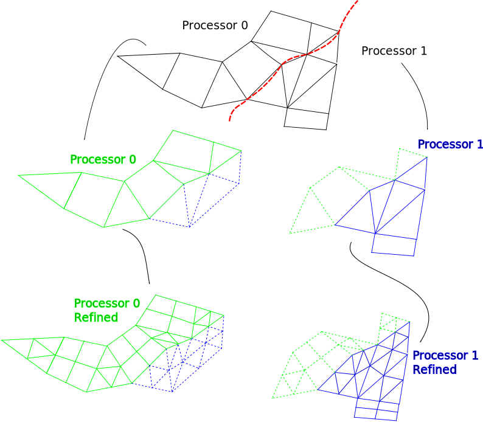
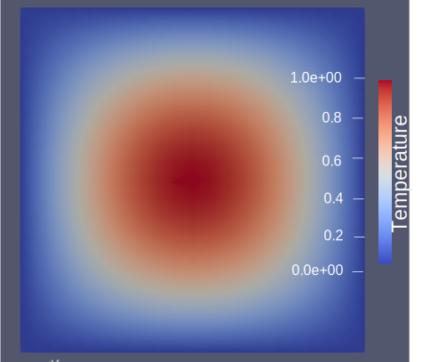
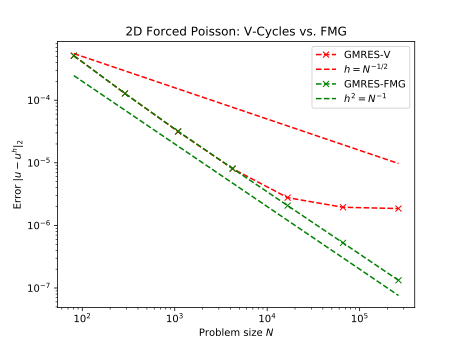
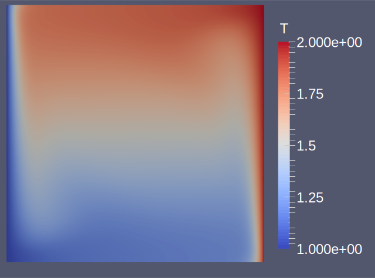
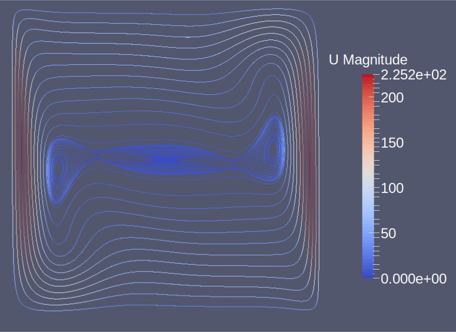
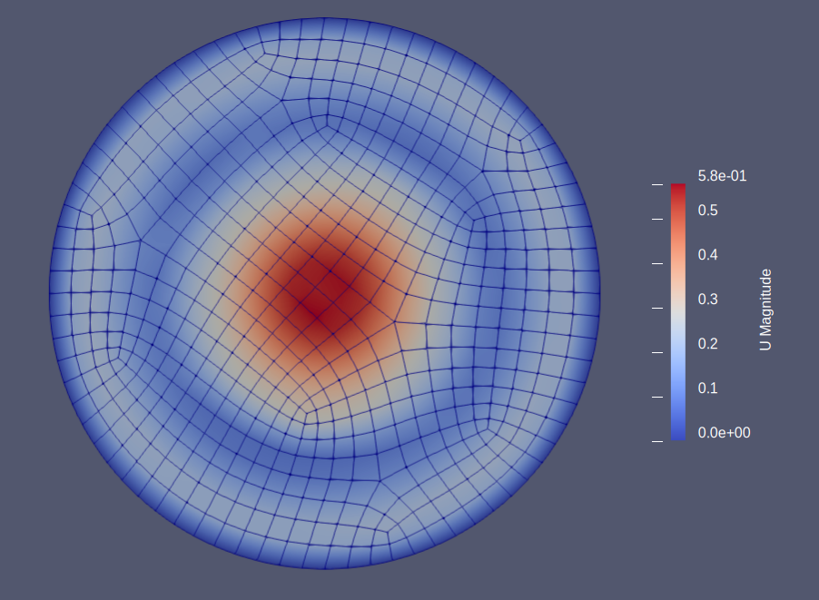
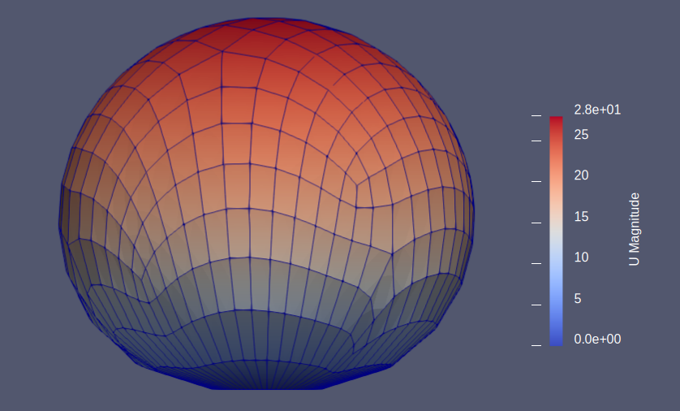

Geometric Multigrid Solver for Unstructured Finite Elements
Recently I've spent good chunk of time implementing and studying the effecacy of utilizing geometric multigrid for solving partial differential equations (PDEs) on unstructured grids.
Geometric Multigrid is a particularly effective solution technique; it's an algorithmically optimal ( $O(n)$ ) solution technique, in both memory requirements as well as computational cost, and lends itself naturally to parallelization via domain decomposition. The technique operates by smoothing the solution errors on a series of coarser sub-problems whose information can then be used to repeatedly solve the originally desired fine grid problem in a highly efficient fashion. The method is algorithmically scaleable, and it converges to the solution in a fixed number of iterations that is independent of the mesh resolution. The key aspect and difficulty of such a technique is implementing it in an efficient, parallel manner which is independent of the input parameters. As such, much of the solver infrastructure was implemented in the open source libMesh library while examples of the optimality of the technique were demonstrated in the GRINS multiphysics application built on top of libMesh. We begin by defining a sequence of grids $\{G_i\}$, and we denote by $\#G_i$ the number of mesh elements within a given grid $G_i$. For simplicity we assume that these grids are ordered based on their element count so that we have: $\#G_f >... > \#G_i > ... > \#G_c$ where we adopt the notation so that $G_f$ and $G_c$ correspond respectively to the finest and coarsest grids.
libMesh is used to partition the domain amongst processors, refine the mesh, and then manage local-to-global degree of freedom information as well as ghosted element info which must be periodically communicated amongst processors.The multigrid technique then utilizes such info to construct a grid hierachy and projection and interpolation operators which become fundamental pieces to the overall algorithm.
As a simple example of the solver in action we can consider Poisson's equation, the prototypical elliptic PDE which models diffusive processes. Poisson's equation has a strong formulation given by:
$$\nabla u = b(x)$$.For a specific instance we can choose a square domain with insulated boundaries which is forced internally with some heat source given by:
$$b(x) = 2\pi^2 \sin(\pi x)\sin(\pi y)$$.This gives rise to a solution as depicted in the following:

As expected, this gives rise to optimal convergence rates which we can inspect by comparing our computed solution to an exact solution generated via the method of manufactured solutions. As we can see, one application of FMG produces a solution on the order of the discretization error.
We can similarly study more exotic physics. For example here we consider thermally driven flow which encorporates a Boussinesq buoyancy approximation which couples an energy balance equation to that of the incompressible Navier Stokes equations. In the figure below we can observe the formation of thermal vortices, a phenomena which is particularly difficult for black box solvers to resolve.
$$ \begin{aligned} \frac{\partial \boldsymbol{u}}{\partial t} + (\boldsymbol{u} \cdot \nabla)\boldsymbol{u} &- \mu \nabla^2 \boldsymbol{u} + \frac{1}{\rho}\nabla p = - \beta \textbf{g} T \\ \nabla \cdot \boldsymbol{u} &= 0 \\ \frac{\partial T}{\partial t} + \boldsymbol{u}\cdot \nabla T &- \nabla \cdot (k\nabla T) = \frac{J}{\rho c_p} \end{aligned} $$  We can also apply these ideas to elastodynamics problems.
$$ \begin{aligned} \rho_0 \ddot{\boldsymbol{\phi}} = \nabla^\textbf{X} \cdot [\textbf{P(F)}] &+ \rho_0 \textbf{b}_m \quad \text{ in } B\times (0,\tau) \\ \boldsymbol{\phi} &= \textbf{g} \quad \text{ in } \Gamma_d \times (0,\tau) \\ \textbf{P(F)}\textbf{N} &= \textbf{h} \quad \text{ in } \Gamma_n \times (0,\tau) \\ \boldsymbol{\phi} (\cdot,0) &= \textbf{X} \quad \text{ in } B \\ \dot{\boldsymbol{\phi}} (\cdot,0) &= \textbf{V}_0 \quad \text{ in } B \end{aligned} $$In the above formulation $B$ represents the reference configuration and $\textbf{X}$ corresponds to the Lagrangian coordinate system. Furthermore, $\textbf{P(F)}$ is the first Piola-Kirchoff frame indifferent stress response function having $\textbf{F} = \nabla^\textbf{X}\boldsymbol{\phi}$, $\rho_0$ is the reference mass density, $\textbf{b}_m$ is the material description of a specified spatial body force field per unit mass, $\textbf{N}$ is the outward unit normal field on $\partial B$, and $\textbf{g,h,V}_0$ are perscribed fields.
 Of course there are many possible further applications of such a technique which can be explored through the introduction of different domains, boundary conditions, and couplings between various physics. Having the ability to explore such scenarios from the command line provides a very fast and robust method for modeling and investigating the behaviour and dynamics of various problems of interest.